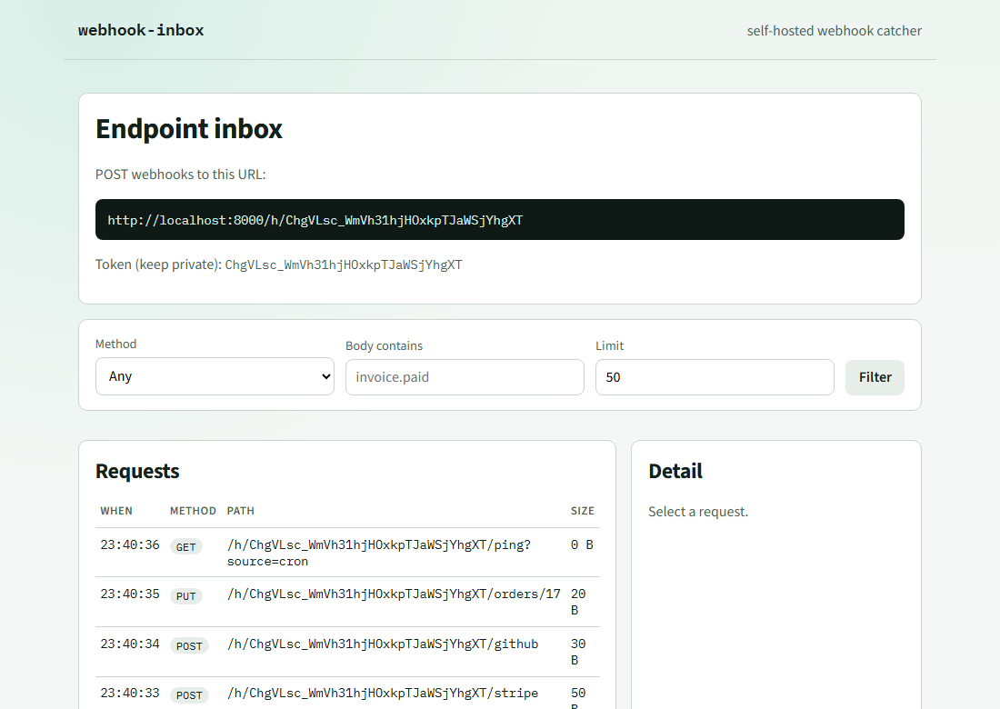

Standard-library SQLite, no ORM
There are two tables and a handful of queries. An ORM would add a dependency and a layer without removing any code. Each call opens a short connection, so nothing is shared between worker threads.
FastAPI · SQLite · HTMX
Provider dashboards often hide the raw request, and tunnels disappear when you close the laptop. I built a small inbox you host yourself: it stores every request, shows headers and body, and replays a stored request after checking where it is going.
Compute the signature a provider would send for a body and a secret. It runs in this
tab with Web Crypto and sends nothing anywhere. The Python helpers in
webhook_inbox.signatures accept the same strings, and the vectors below
are checked against them in the test suite.
Each vector was computed with Python's hmac module and is stored in
signature-vectors.json. This list is computed live
by the code above.
/h/{token}; method, path, query, headers, body, time and source IP are stored in SQLite
git clone https://github.com/mohamedtaqysalmi/webhook-inbox
cd webhook-inbox
docker compose up --build
# in another terminal
curl -X POST localhost:8000/api/endpoints
curl -X POST localhost:8000/h/TOKEN -d '{"hello":"world"}'
curl localhost:8000/api/endpoints/TOKEN/requests
Replace TOKEN with the token returned by the first request. The UI is at
http://localhost:8000. Without Docker:
pip install -e . then
uvicorn --factory webhook_inbox.app:create_app.
A screenshot of a local run with four test requests sent by hand. Filters and the request list are server-rendered HTMX partials; selecting a row loads its headers and body into the detail pane, where the replay form lives.

A request to an endpoint URL is read with a byte limit, stored, and shown in the inbox. Replay goes through a target check before any outbound request is made.
provider ──► /h/{token}
│
├─ rate limit per IP
├─ read body, stop at the size limit (413)
├─ cap header bytes
▼
SQLite ──► JSON API and HTMX UI (list, filter, inspect)
│
└─ replay ──► resolve host, block private ranges
│
▼
outbound request, result logged
What the three helpers verify. All of them compare with a constant-time function and raise an error with a reason such as missing, malformed, mismatch or expired.
| Scheme | Header value | Signed bytes | Extra check |
|---|---|---|---|
verify_github |
sha256=<hex> |
raw body | none |
verify_stripe |
t=<unix>,v1=<hex> |
<t>. then raw body |
timestamp within 300 s by default; any v1 may match |
verify_hmac |
hex or base64, optional prefix | raw body | choice of hash |
There are two tables and a handful of queries. An ORM would add a dependency and a layer without removing any code. Each call opens a short connection, so nothing is shared between worker threads.
The inbox is state the server owns, so I render partials on the server instead of building a separate front end. The reasoning is in ADR 0001.
Checking only the URL text misses hostnames that point at private addresses, so the check looks at every address the name resolves to. Private targets are off unless you enable them for a local demo.
Providers disagree on header names and signed bytes. I kept the verification functions separate and tested them against vectors computed independently, then built this calculator on the same vectors so the page cannot drift from them.
X-Forwarded-For is not trusted.Planned work is tracked in the open issues. To contribute, start with CONTRIBUTING.md.